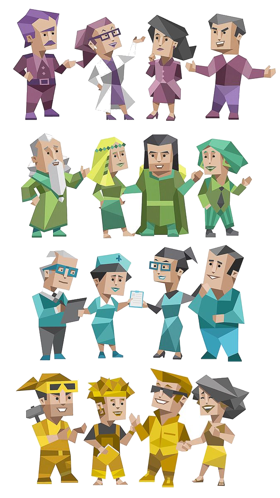

I kept hearing one kind of answer.
As an NF user, I knew how easy it was to seek empathy and miss colder, faster, or more action-oriented perspectives.
Case study · MBTI Discussion
2026.04 - Present
MBTI Discussion is treated here as a community product: the challenge is to make identity expressive without letting the interface become noisy.

The experience is designed around quick recognition, type-based navigation, and discussion prompts. The interface should help users understand where they belong, what they can contribute, and how to enter a conversation with low friction.
As an NF user, I knew how easy it was to seek empathy and miss colder, faster, or more action-oriented perspectives.
Interviews showed that users care whether AI sounds understanding, practical, non-judgmental, or able to reveal a blind spot.
The strongest surprise was SP: direct, action-first responses helped users get unstuck.
Identify what users expect from MBTI communities: self-expression, comparison, debate, and lightweight discovery.
Organize entry points around types, discussion topics, and community actions instead of a flat feed.
Use personality labels as visual anchors while keeping the interface minimal, readable, and discussion-first.
Present the project as a social product with clear feature logic, not just a visual experiment.
The product is structured around three layers: personality discovery, discussion contexts, and lightweight community actions. This makes the user journey more intentional than a simple feed and gives the product a stronger reason to exist.
The system uses strong typographic hierarchy, compact personality cues, and visual rhythm to keep a discussion product from feeling like a generic forum. The design direction favors clear category structures, expressive type badges, and short paths to participation.
AI handled the engineering surface: components, API routes, database schema, deployment config.
I kept the product judgment: what should exist, where the boundary is, how each agent should sound, and when an iteration felt wrong.
A more premium, productized framing for a social discussion project: less template-like, more intentional, and easier to present as a complete product case.